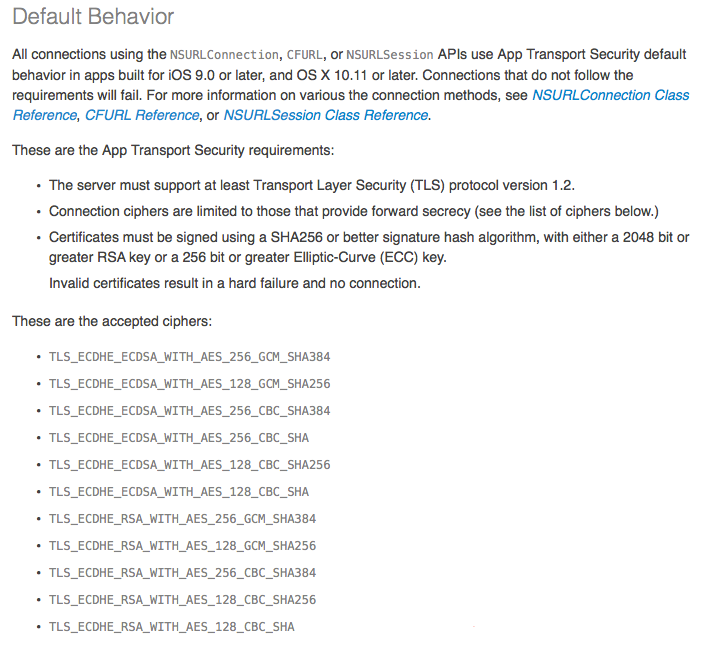
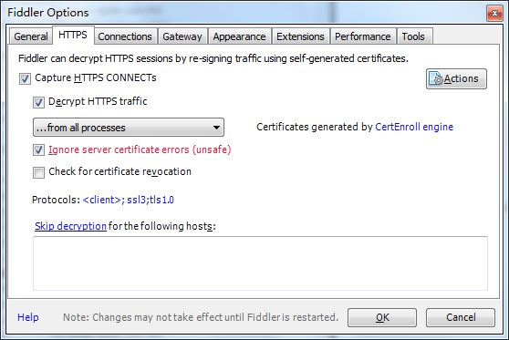

Universal Link 填坑
简介
Universal Link 是 iOS9 的新特性，通过它可以使用传统的 HTTPS 链接来启动客户端APP，使用相同的地址来访问网站和APP。
When you support universal links, iOS 9 users can tap a link to your website and get seamlessly redirected to your installed app without going through Safari. If your app isn’t installed, tapping a link to your website opens your website in Safari.
要开启 Universal Link 功能，服务端的配置比较重要，客户端的代码相对简洁，主要包括以下几步：
- 创建 apple-app-site-association 文件，文件内容包含客户端可以响应的 URL 地址。
- 上传 apple-app-site-association 文件到 HTTPS 服务器，可以把文件放到域名根目录或者
.well-known子目录。 - 客户端响应 universal links。
其中 HTTPS 服务器需要支持 ATS。
服务端
apple-app-site-association 文件内容
|
参数说明：
| 参数 | 说明 |
|---|---|
| applinks | 根节点，保持不变 |
| apps | 默认节点，保持不变 |
| details | 应用信息 |
| appID | TeamID.Bundle_ID |
| paths | 客户端支持的路径列表，支持通配符* |
其中TeamID有两个获取途径
- 钥匙访问串中对应开发证书名称后面的括号里的那一串字符
- 在https://developer.apple.com/account 的 Membership 可以查到 TeamID
注意 apple-app-site-association 不带有文件后缀名，编辑好后，把 apple-app-site-association 上传到 HTTPS 服务器，可以把文件放到域名根目录或者 .well-known 子目录，之后验证下载地址是否正常，如：https://yourdomain.com/apple-app-site-association，其中 yourdomain.com 记得改成你的域名哈。
ATS
如果服务器已经支持 App Transport Security（ATS），请跳过这里。
一个符合 ATS 要求的 HTTPS，应该满足如下条件：
- Transport Layer Security协议版本要求TLS1.2以上
- 服务的Ciphers配置要求支持Forward Secrecy等
- 证书签名算法符合ATS要求等
Certificates must be signed using a SHA256 or better signature hash algorithm, with either a 2048 bit or greater RSA key or a 256 bit or greater Elliptic-Curve (ECC) key. Invalid certificates result in a hard failure and no connection
博主测试时申请的是沃通的免费证书，可以使用2年。

iOS客户端
- 在 identifier 管理页面 https://developer.apple.com/account/ios/identifier/bundle 找到对应的 Bundle_ID > 编辑 > 开启 Associated Domains > Done.
- 在 profile 管理页面 https://developer.apple.com/account/ios/profile 找到对应的 profile 文件，重新生成。
- 更新 Xcode 的 profile 文件。
进入工程配置，定位到 Target > Capabilities > Associated Domains，开启该功能，之后点击 Associated Domains 下面的
+，输入待支持 Universal Link 的域名，格式如下：applinks:www.mywebsite.com其中前缀
applinks:是固定写法，域名要明确是否包含www，applinks:后面只能跟上域名，不能 IP 直连。实现
UIApplicationDelegate的回调方法：// Availability : iOS (9.0 and later)- (BOOL)application:(UIApplication *)application continueUserActivity:(NSUserActivity *)userActivity restorationHandler:(void (^)(NSArray *))restorationHandler {BOOL handledByDeepShare = ...;return handledByDeepShare;}
内网环境
如果你是外网环境，可以跳到测试+填坑部分。
如果是内网测环境测试，就需要解决https网络代理的问题，博主就是栽在这个坑里了。在之前的开发过程中，因为有用Fiddler来拦截HTTPS请求，导致系统在安装客户端时发起的 apple-app-site-association 请求一直都是失败的，即使 iOS 客户端已经安装了 Fiddler 生成的根证书，也一样不能通过测试。

将 Fiddler 的 Capture HTTPS CONTENTs 功能关闭，再开启 Fiddler 的 hosts 功能就可以访问到内网的 HTTPS 服务器了。
测试+填坑
安装新包
- Xcode联调安装，需要先把旧客户端删除，不然系统不会发起 apple-app-site-association 请求，这个是目前存在的现象，不确定以后是否会优化。
- 将app打包成ipa，通过其他安装工具安装。
在新包的安装过程中，系统会发起 apple-app-site-association 的请求，注意这里是系统发起，而不是 app 发起，因此只能由服务器支持 ATS。
贴一个客户端支持的 Universal Link 到备忘录，保存，点击链接，希望你能顺利启动 app，并执行 application:continueUserActivity:restorationHandler: 方法，不然就有的折腾了。
跨域
你是不是会奇怪，为什么要点备忘录里的链接，而不是网页上的，因为网页上还有一些坑，先确定 Universal Link 是否调通，再去填别的坑也不会太累，你说是不。
- Universal Links will not work if you paste the link into the browser URL field.
- Universal Links work with a user driven
<a href="...">element click across domains. Example: if there is a Universal Link on google.com pointing to bnc.lt, it will open the app.- Universal Links will not work with a user driven
<a href="...">element click on the same domain. Example: if there is a Universal Link on google.com pointing to a different Universal Link on google.com, it will not open the app.- Universal Links cannot be triggered via Javascript (in window.onload or via a .click() call on an
<a>element), unless it is part of a user action.
也就是从iOS 9.2开始，直接把 Universal Link 拷贝到 Safari 的地址栏是无效的，在相同的 domain 内 Universal Links 是无效的，通过 js 调用也是无效的，真的是醉了。
欢迎填坑
如果还有其他坑，欢迎来填！！
验证外网环境
苹果官方提供了 appsearch-validation-tool 可以用于验证 apple-app-site-association 文件是否正确，appsearch-validation-tool 目测是用于检测客户端搜索功能，顺带支持检测 Universal Link，因 iOS8 支持客户端搜索对应的 apple-app-site-association 需要签名，因博主写此文时尚无外网环境，也没有做过客户端搜索功能的支持，因此没用过这个工具，写在这里只为备用。
参考: